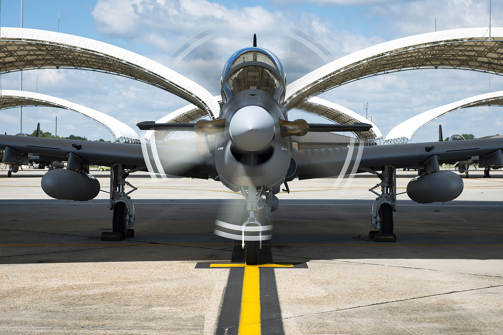

History & Heritage
From a small training establishment built with foreign help, the NAF has grown into one of Africa's most experienced air forces.
Born of a nation's ambition
The Nigerian Air Force was formally established by an Act of Parliament in April 1964. Its mission was to give the young republic its own air power: to defend its airspace, support the Army and Navy, and aid the civil authority.
German, and later Canadian, technical assistance helped train the first generation of Nigerian pilots and technicians. The first Chiefs of the Air Staff were seconded German officers until Lieutenant Colonel George Kurubo became the first Nigerian to lead the service in 1966.

Six decades of air power
Milestones that shaped the force, from its founding to today's modernisation.
- 1963
The post of Chief of the Air Staff is created
Colonel Gerhard Kahtz of the German Air Force becomes the first CAS and leads the German technical assistance mission.
- 18 April 1964
Nigerian Air Force established
Parliament passes the Air Force Act, and the NAF begins with trainer and light transport aircraft.
- 1966
First Nigerian Chief of the Air Staff
Lieutenant Colonel George T. Kurubo takes command, beginning the era of Nigerian leadership.
- 1967 – 1970
Rapid expansion in wartime
Jet fighters and bombers enter service, and the force grows quickly in size and experience.
- 1975 – 1984
Modernisation
The C-130H Hercules arrives, followed by the Alpha Jet and other combat and training types, giving the NAF strategic airlift and a modern strike force.
- 1990s
ECOMOG and regional peacekeeping
NAF aircraft and crews support ECOWAS peace operations in Liberia and Sierra Leone.
- 2009 – 2010
F-7NI enters service
Supersonic interceptors and FT-7NI trainers restore the air defence capability.
- 2014 – present
Counter-insurgency operations
Sustained air operations in the North-East and other theatres drive investment in ISR, attack helicopters and armed UAVs.
- 2021
JF-17 Thunder and A-29 Super Tucano inducted
Two of the most significant acquisitions in decades transform strike and air defence capability.
- 30 October 2025
23rd Chief of the Air Staff
Air Marshal Sunday Kelvin Aneke assumes command of the Nigerian Air Force.
Willing. Able. Ready.
The values that guide every member of the NAF, on duty and off.
Integrity
Honesty, accountability and moral courage at every level of command.
Service
Selfless commitment to the nation and to the mission.
Excellence
Professional mastery in flying, engineering and every support trade.
Loyalty
Faithfulness to the Constitution, the service and one another.
A force willing to serve, able to fight and ready to win.
Today the NAF is organised under HQ NAF in Abuja, with six operational commands and the Nigerian Air Defence Corps.
Command structure